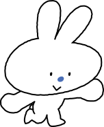

학생이 선택하는 교육과정, 설계와 점검을 지원합니다.
진로 탐색, 과목 선택, 졸업 요건 점검을 위한 도구와 4대 안전망 안내를 제공합니다.

지금 궁금한 것부터 골라 보세요. 어느 질문에서 시작해도 괜찮습니다.
학교에서, 학교 사이에서, 학교 밖에서, 단계별 안전망이 학생의 과목 선택을 보장합니다.
보라 칸(학교 밖 교육)은 흰 글자 대비 확보를 위해 시안의 보라보다 한 단계 어둡게 조정했습니다.
수강생이 적어서 선생님이 안계셔서 열기 힘든 과목을, 우리 학교에서 정규 일과 시간 중에 수강할 수 있도록, 충남 온라인학교가 지원합니다.
안내 보기 →